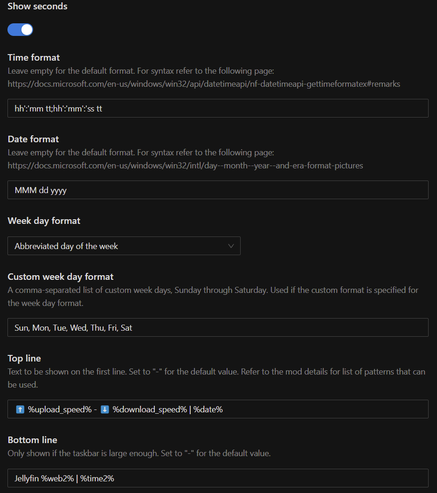
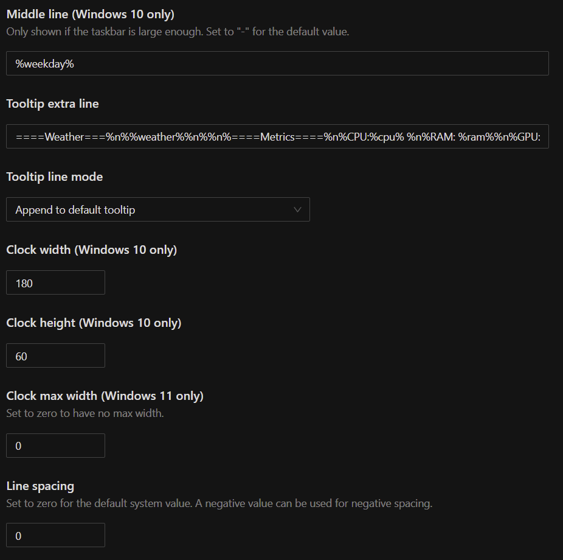
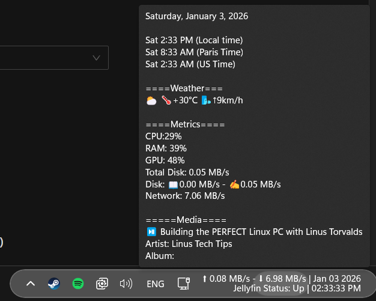

Personal reference for a full Windows installation and customization workflow — base install steps, driver handling, and Windhawk-based taskbar/start menu theming.
Starting point: Medicat USB.


⬆️ %upload_speed% - ⬇️ %download_speed% | %date%Jellyfin %web2% | %time2%====Weather===%n%%weather%%n%%n%====Metrics====%n%CPU:%cpu% %n%RAM: %ram%%n%GPU: %gpu%%n%Total Disk: %disk_total%%n%Disk: 📖%disk_read% - ✍️%disk_write%%n%Network: %total_speed%%n%%n%=====Media====%n%%media_status% %media_title%%n%Artist: %media_artist%%n%Album: %media_album%
Network Stack